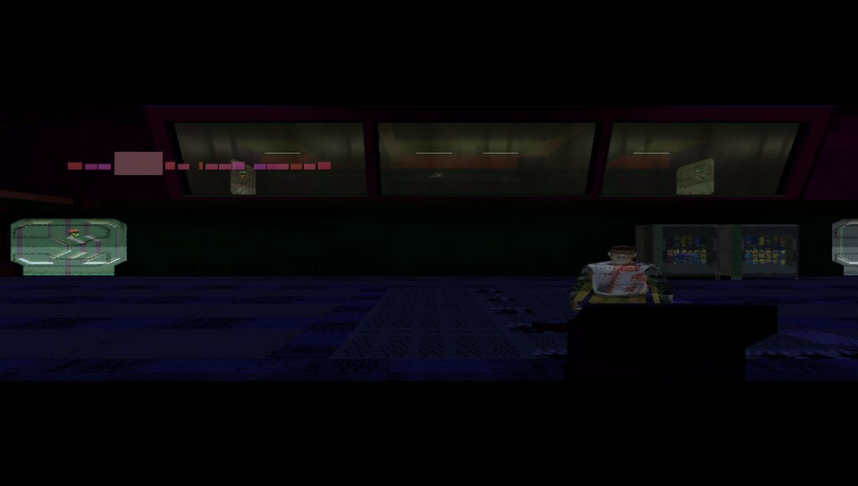
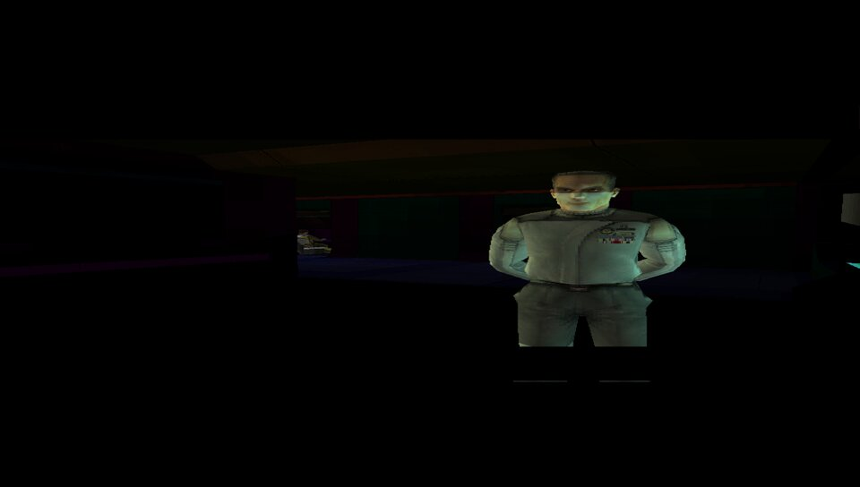
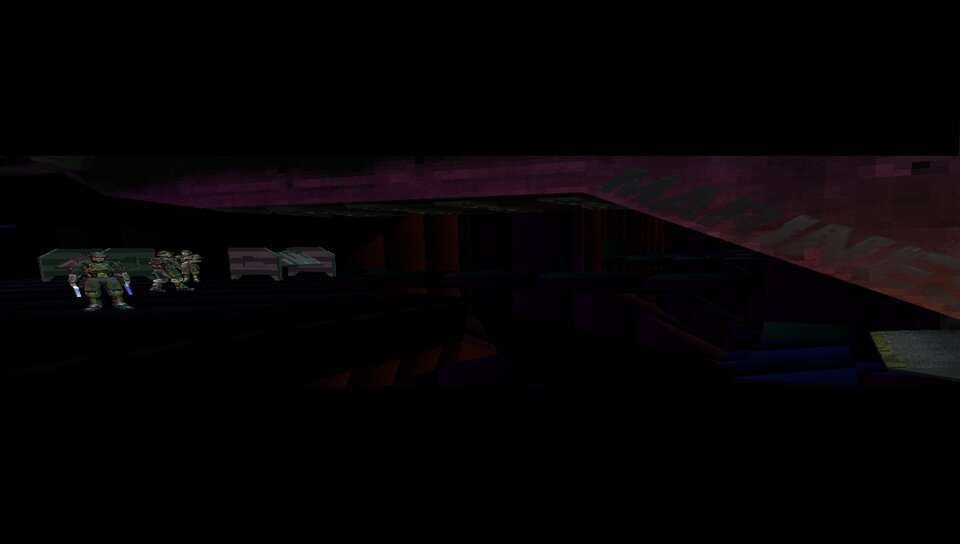
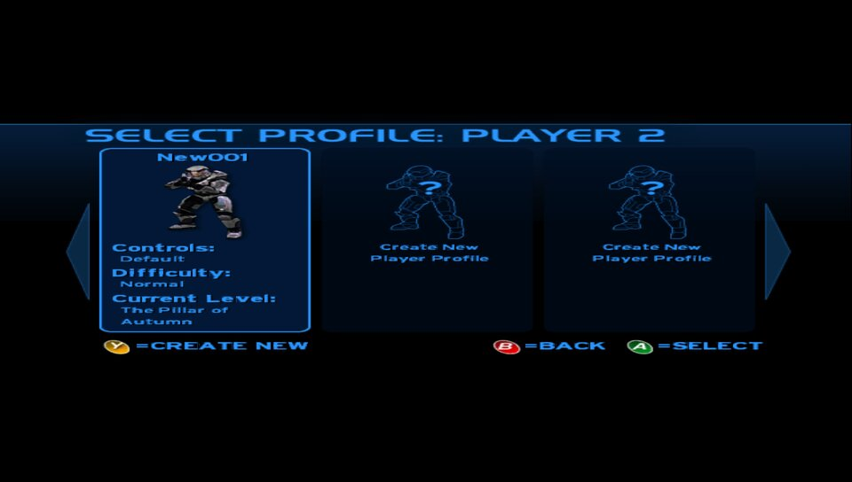
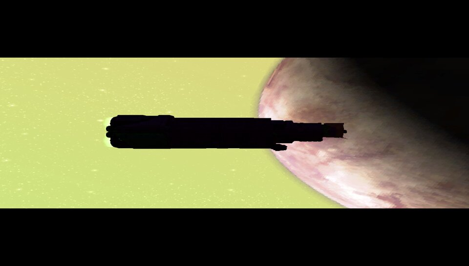

Status
What a build from the current tree does on real hardware. Tested on two PS Vitas (3.65, HENkaku), verified first in Vita3K.
- worksBoot to main menu~15 s from LiveArea. Ring and planet backdrop, camera pan, full menu navigation.
- worksProfiles & savesCreate a profile, checkpoint save, pause → save & quit → main menu.
- worksCampaign: The Pillar of AutumnLoads in ~20 s. Opening cinematic plays (exterior, bridge, cryo bay). Look tutorial answers to the sticks.
- worksTextMenus, dialogs, HUD prompts — Halo's run-time font cache is tracked and re-uploaded as glyphs are drawn.
- worksAudioMusic, dialogue and effects: Xbox ADPCM decoded and mixed in software to the Vita's 48 kHz output.
- partialGraphicsHalo's own vertex programs and 133 of its register-combiner pixel shaders run on the GPU. Cube-map reflections, some exterior materials and a few textures are still wrong.
- partialPerformance~8 fps in-level. The GPU is nearly idle; the recompiled game code is the cost. Code-generation work in progress.
- not yetMultiplayer mapsSplit screen needs two players; System Link needs the Xbox network stack. Blood Gulch solo is not reachable.
- not yetLevel selectOnly the first mission is reachable without a save that has progressed.
On the hardware and in the emulator





How it works
- RecompileThe XBE's 8,101 functions (921k x86 instructions) are lifted to C by our own recompiler. Flags are computed lazily and only where read; the guest register file lives in a context struct the compiler can keep in ARM registers.
- Kernel & API90 Xbox kernel exports — threads, events, APCs, files, virtual memory — re-implemented over the Vita's SCE kernel. XAPI startup runs as lifted code rather than being faked.
- GraphicsDirect3D 8 calls are recorded per frame and replayed through libgxm. Halo's 67 vertex shaders and its NV2A register-combiner setups are translated to Cg and compiled by the console's own shader compiler.
- Sound & inputDirectSound streams feed a software mixer (Xbox ADPCM → 48 kHz stereo). The Vita's controls map onto the Xbox pad; the D-pad doubles for the buttons the Vita lacks.
Install
You need your own copy of Halo: Combat Evolved for Xbox. HaloVita ships no game data — the executable and maps are extracted from your disc image with the included tools.
ux0:/xboxvita-recomp.vpk # install with VitaShell
ux0:data/xboxvita/halo_image.bin # built from your default.xbe
ux0:data/xboxvita/haloce/maps/ui.map # and the maps you want (a10.map for the first mission)
ux0:data/xboxvita/xboxvita.cfg # optional: XV_FPS=1 for the frame-time overlay| Vita | Xbox | Halo (default layout) |
|---|---|---|
| Left / right stick | sticks | move / look |
| ✕ ○ □ △ | A B X Y | jump · melee · action & reload · switch weapon |
| L / R | triggers | throw grenade / fire |
| Start / Select | Start / Back | pause |
| D-pad ↓ ↑ | stick clicks | crouch / zoom |
| D-pad → ← | White / Black | flashlight / switch grenade |
| Select + Start (hold) | — | frame-time overlay |
Milestones
- 2026-08
- XBE parsed; vertex shaders decoded and compiled on the console; first textured quad through libgxm.
- 2026-08-31
- Recompiler + kernel translator boot the game on a Linux host through XAPI, D3D init and the ui.map load.
- 2026-09-01
- Main menu on Vita3K; then on real hardware after three hardware-only fixes (fiber stacks, file descriptors, TLS layout). Menu navigation and profile creation. Ring backdrop through the game's own 3D pipeline.
- 2026-09-02
- First campaign level: render targets, D3D library globals, per-material combiner programs, BC texture upload. Audio mixer. Text. Analog sticks. Clocks to 444/222 MHz, -O2 code generation. Intro cutscene plays on the Vita at ~8 fps.